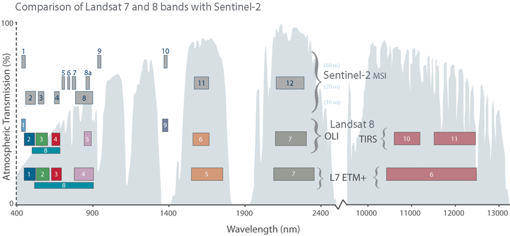

|
 |
|
https://www.usgs.gov/faqs/ |
| LONG_NAME | WAVELENGTH (nannometers) |
BANDWIDTH (nannometers) |
RESOLUTION (meters) |
Notes |
| Band 1 - Coastal aerosol | 443 | 20 | 60 | Narrow bandwidth, Low spatial resolution |
| Band 2 - Blue | 490 | 65 | 10 | VIS has high energy, good spatial resolution |
| Band 3 - Green | 560 | 35 | 10 | VIS has high energy, good spatial resolution |
| Band 4 - Red | 665 | 30 | 10 | VIS has high energy, good spatial resolution |
| Band 5 - Vegetation Red Edge | 705 | 15 | 20 | Narrow band, moderate spatial resolution |
| Band 6 - Vegetation Red Edge | 740 | 15 | 20 | Narrow band, moderate spatial resolution |
| Band 7 - Vegetation Red Edge | 783 | 20 | 20 | Narrow band, moderate spatial resolution |
| Band 8 - NIR | 842 | 115 | 10 | Lower energy, wide band, good spatial resolution |
| Band 8A - Narrow NIR | 865 | 20 | 20 | Narrower band, lower spatial resolution |
| Band 9 - Water vapour | 945 | 20 | 60 | |
| Band 10 - SWIR - Cirrus | 1375 | 20 | 60 | |
| Band 11 - SWIR | 1610 | 90 | 20 | |
| Band 12 - SWIR | 2190 | 180 | 20 | Wide band to get reasonable spatial resolution |
Last revision 1/23/2023